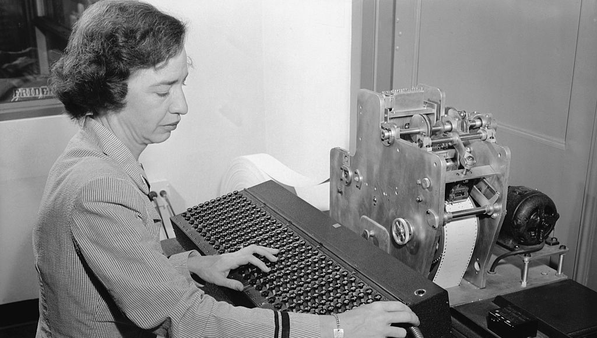

Grace Hopper est une informaticienne américaine née en 1906 et morte en 1992. Elle est considérée comme l’une des pionnières de l’informatique. Elle a participé à la création des premiers langages de programmation, ce qui a permis de rendre les ordinateurs plus faciles à utiliser.
Grace Hopper a étudié les mathématiques et la physique. Pendant la Seconde Guerre mondiale, elle s’engage dans la marine américaine où elle travaille sur les premiers ordinateurs. Elle devient ensuite une figure importante dans le développement de l’informatique moderne.
Grace Hopper est connue pour avoir inventé le premier compilateur. Un compilateur permet de traduire un langage informatique en langage compréhensible par un ordinateur. Elle a aussi participé à la création du langage COBOL, encore utilisé aujourd’hui.
En savoir plus sur le travail de Grace Hopper Page wikipedia